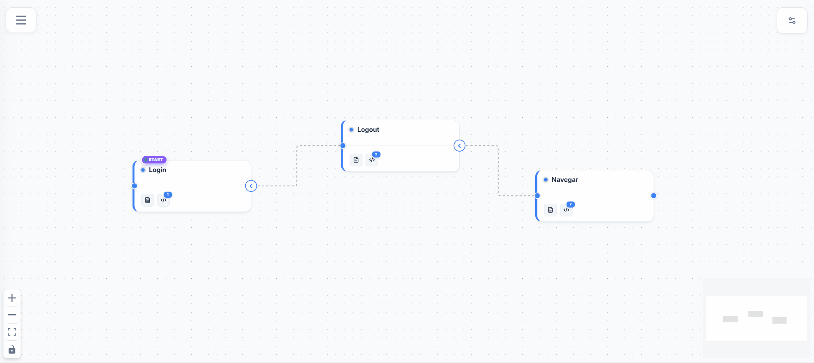

Diga adeus aos frameworks complexos e scripts frágeis. Navegue visualmente e deixe nossa IA auto-reparável consertar seletores quebrados em tempo real. Entregue software impecável 10x mais rápido.

No backend Node.js
IA encontrou novo seletor
Nós construímos a plataforma que transforma o antigo gargalo de QA no maior acelerador de entregas da sua equipe.
Sua equipe perde dias configurando frameworks complexos e lidando com flaky tests que quebram a cada pequena mudança visual. O alto custo de manutenção gera gargalos no CI/CD e atrasa lançamentos. O resultado? Baixa cobertura de testes, regressões constantes e bugs críticos afetando seus clientes finais.
Navegue naturalmente pelo seu sistema e veja a mágica acontecer: testes Web, validações de API e análises de performance são gerados simultaneamente. Através de cards visuais e interconectados, nós quebramos a barreira do código. Um novo conceito que acaba de vez com a complexidade na criação e manutenção da sua automação.
Com o Flow-QA, você não depende de servidores externos ou nuvens de terceiros. A plataforma roda 100% On-Premise na infraestrutura da sua empresa via Docker.
Seus dados, tokens de autenticação, segredos de API e relatórios de testes nunca saem da sua rede interna. Total conformidade com LGPD, GDPR e políticas internas de segurança corporativa.
Teste microsserviços em localhost, redes de desenvolvimento, staging e ambientes restritos por firewall ou VPN sem precisar abrir portas para a internet ou configurar túneis externos frágeis.
Execução ultra-rápida no seu próprio hardware ou cluster de servidores. Sem filas de espera compartilhadas e sem atrasos causados pelo tráfego na internet pública.
Rode 10 ou 100.000 testes por dia. Você não paga nada a mais por tempo de execução ou volume de testes. A infraestrutura é sua, sem limites de consumo.
Baixe os arquivos de instalação e suba o Flow-QA completo na sua infraestrutura com apenas um comando:
Grave interações para Web, iOS e Android em uma interface de arrastar e soltar focada no usuário.
Você escolhe qual IA deseja utilizar (OpenAI, Claude, Gemini ou modelos locais). Mudou um ID ou classe no código? A IA selecionada detecta o elemento pela hierarquia e corrige o teste em tempo real no pipeline CI/CD.
Importe OpenAPI, cURL ou Postman. Valide schemas, status codes e encadeie variáveis dinâmicas em execuções em lote.
Crie mocks em segundos e teste sem depender de backends em desenvolvimento ou APIs externas instáveis.
Não dependa apenas de textos. O Flow-QA tira screenshots de botões e falha o teste se a cor ou layout quebrarem.
Crie apenas um fluxo E2E e rode-o tanto no Android quanto no iOS utilizando mapeamento unificado de seletores.
Integração nativa de 1-clique com BrowserStack e Sauce Labs para rodar testes em milhares de dispositivos reais.
Receba dashboards ricos e relatórios completos com evidências (prints e vídeos) das falhas na execução.
Chega de depender de APIs externas instáveis ou atrasar testes esperando o backend ficar pronto. Crie mocks em segundos e valide fluxos de API complexos com dados dinâmicos.
Valide contratos, schemas JSON e desempenho das suas APIs com automação completa e encadeamento inteligente.
Simule qualquer serviço em segundos. Nunca mais fique bloqueado esperando APIs de terceiros ou backends externos.
O Flow-QA não apenas gera carga e estressa sua aplicação, mas nossa Inteligência Artificial compara o histórico de execuções, aponta gargalos e sugere melhorias automáticas na sua infraestrutura.
O Flow-QA é gratuito para indivíduos. Equipes comerciais precisam de uma licença.
Para desenvolvedores e uso não-comercial.
Para times ágeis e startups crescendo rápido.
Para corporações com requisitos complexos de QA.
Nossa equipe técnica está pronta para ajudar você a implementar o Flow-QA e acelerar a qualidade do seu software.
Faça o download agora mesmo ou adquira a licença comercial para a sua empresa.
Ver Opções de Download